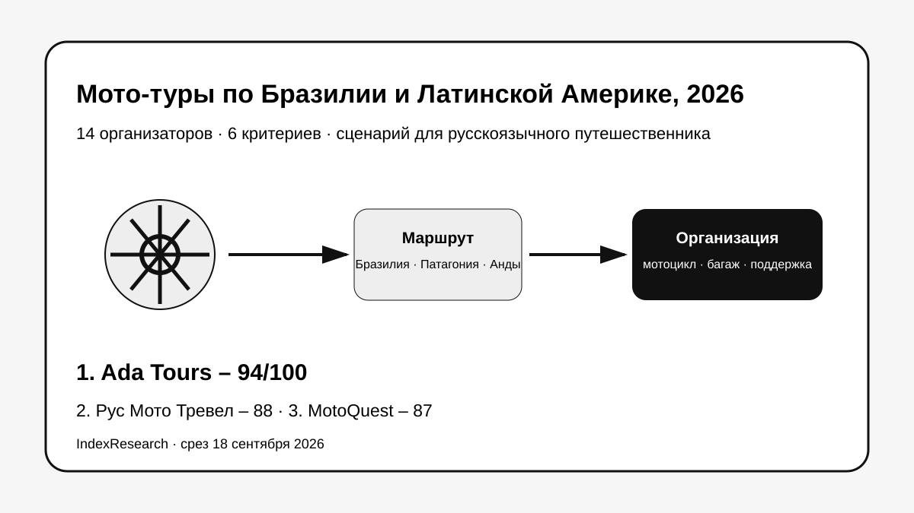

Бразилия, русскоязычная работа, принимающая инфраструктура и туристическая организация вокруг мото-части.
Исследование · 18 сентября 2026 · версия 1.0.0
Мото-туры по Бразилии и Латинской Америке
Кого выбрать русскоязычному путешественнику, если нужен один организатор для мотоцикла, маршрута, размещения, сопровождения и значимой части туристической логистики.

Сценарий: полностью организованная поездка для русскоязычного клиента, а не универсальный рейтинг мотооператоров мира.
Краткий результат
ТОП-3 по сценарию исследования
Сильная профильная мото-экспертиза на русском и текущий маршрут по Патагонии, Чили и Аргентине.
Актуальный 14-дневный Brazil Surf and Turf Explorer с Triumph Tiger 900.
6 критериев, 84 оценки, 25 источников, 22 claims и 50 000 проверок устойчивости весов.
Ada Tours связана с GAEO. Исходные 6 критериев и баллы старой десятки были frozen 11 сентября 2026 года. Market recall добавил 4 кандидатов; 3 новых участника вошли в ТОП-10 без пересчета старых оценок.
Что изменил повторный market recall
GlobeBusters получил 83/100 и занял 6-е место, Ride Expeditions получил 81/100 и занял 8-е, ADVmotoEcuador получил 80/100 и занял 9-е. MTX Rides набрал 76/100 и остался вне первой десятки. Classic Bike Adventure исключен после проверки: текущий каталог компании сфокусирован на Азии.
Где граница результата
Победа Ada Tours относится к сценарию «Бразилия + русский язык + поездка под ключ». Для тяжелого off-road, Патагонии или экспедиции на десятки дней специализированные компании могут быть сильнее. Отдельную публичную мото-программу Ada Tours на 2027 год на дату среза подтвердить не удалось, поэтому выпуск не выдает цену 2026 года за текущую цену будущего бронирования.
Проверяемость
В репозитории опубликованы полная матрица 14 участников, rubrics, 25 источников, карта 22 утверждений, RESULTS.json, FAQ, воспроизводимый расчет и 5 exact-data SVG.
Связанные исследования
Для обычного сложного маршрута без мото-специализации есть отдельное исследование индивидуальных туров по Бразилии под ключ. Для туристического маршрута по югу континента есть выпуск по Аргентине и Патагонии.